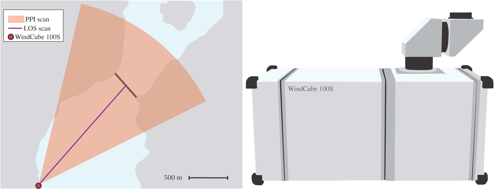
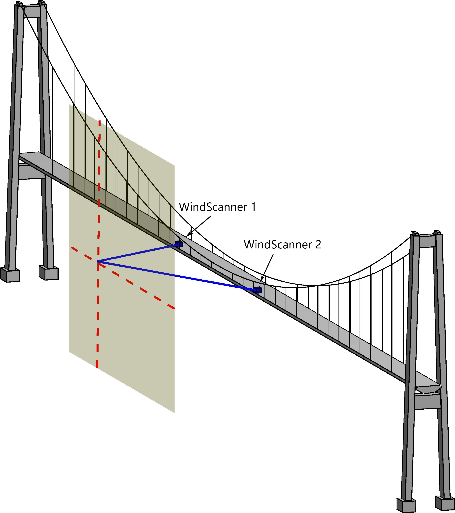

We are involved in pioneering research on how Doppler wind lidar technology can be used for wind engineering applications. Using both long-range and short-range lidar instruments, we have investigated their capability to monitor the wind conditions in Norwegian fjords (Lysefjord and Bjørnafjord). This includes both the characterization of atmospheric turbulence and the estimation of the mean wind velocity and a comparison of such measurement with those from sonic anemometers, whenever possible.
Introduction
LIDAR is the acronym for Light Detection And Ranging. It is a remote sensing technology based on the emission of a laser beam and the analysis of the backscattered light by gas and particles in the atmosphere.
A lidar is therefore made of three main components: a laser, a telescope, and the detection system.
Doppler wind lidar technology has become increasingly popular since the end of the 1990s.
Although it was initially used in atmospheric research, it is nowadays often applied in the field of wind energy, for wind ressources assessement or to investigate the flow around wind turbines.
At the University of Stavanger, we investigate how wind lidar technology can be used to complement traditional anemometers for wind load modelling through a better understanding of atmospheric turbulence.
What is the line-of-sight velocity ?
For wind velocity measurements, a so-called Doppler wind lidar with a wavelength of ca. \(1.5 \mu m\) is commonly used.
In that case, the atmospheric particles that backscatter the light are dust, pollen and aerosols. A fraction of the backscattered light is collected by the telescope and compared to the emitted light so that a Doppler shift frequency can be measured to estimate the line-of-sight (LOS) velocity of the aerosols, which is assumed identical to the wind velocity.
The LOS velocity component (Fig. 1), denoted hereafter \( v_r \), is also called along-beam velocity, and results from the projection of the three-dimensional wind velocity vector onto the scanning beam:
$$ v_r = u_N \cos\left(\alpha \right)\cos\left(\theta\right) + u_E \sin\left(\alpha \right)\cos\left(\theta\right) + w \cos\left(\theta\right) .$$
where, \(v_r\) is the line-of-sight velocity, sometimes called radial velocity; \(u_N\), \(u_E\) and \(w\) are the Northern, Eastearn and vertical wind velocity components, respectively;
\(\alpha\) is the azimuth angle and \(\theta\) is the elevation angle. The azimuth angle is defined with respect to the North, and the elevation angle is defined with respect to the horizontal plane
A scanning Doppler wind lidar possesses a rotating head allowing hemispherical scanning.
In that case, multiple scanning modes are available: the Velocity Azimuth Display (VAD), the Doppler Beam Swinging (DBS), the Plan Position Indicator (PPI), the Range Height Indicator(RHI) and the Line-Of-Sight (LOS) scan.
Each scan is defined in terms of three parameters: a radial distance \(r\), an azimuth \(\alpha\), and an elevation angle \(\theta\).
Fig.1: Line-of-sight velocity given by a color map as a function of the wind direction of the 10 m/s uniform flow represented by vectors. Fig.2: PPI sector scan with azimuth between \(30^{\circ}\) to \(59^{\circ}\).
Plan-Position Indicator scan
By definition, the Plan-Position Indicator (PPI) scan is run for a fixed elevation and multiple azimuth angles from \(0^{\circ}\) to \(360^{\circ}\).
If the scanning head does not describe a full circle, a so-called PPI sector scan is conducted (Fig. 2). We have used such a scan in the Lysefjord
(Cheynet et al., 2017) to investigate the uniformity of the flow along
the deck of a suspension bridge and the influence of the topography on the mean wind speed upstream of the bridge.
Using small azimuth angles, we also applied a PPI sector scan from an offshore platform.
Fig.3: RHI sector scan with elevation between \(0^{\circ}\) to \(6^{\circ}\).
Sectoral RHI scan
The Range-Height Indicator (RHI) scan is run for a fixed azimuth and multiple elevation angles. We have used such a scan on the FINO1 platform at the end of 2015
to study the vertical coherence of wind above the ocean (Cheynet et al., 2015).
Long-range pulsed scanning wind lidar
A long range scanning wind lidar can measure the along-beam wind velocity component at distances up to several kilometers from the observer,
simultaneously in multiple position along the scanning beam.
In 2014, a WindCube 100S from the company Leosphere (France) was deployed in the Lysefjord (Fig. 4). This instruments operate with a sampling frequency up to 1 Hz.
The influence of the topography on the mean flow was captured by the sectoral PPI scan of the lidar (Fig. 5)

Fig.4 Left: Schematic view of the area scanned by the WindCube 100S deployed 1.8 km far from the Lysefjord bridge in 2014. Right: Schematic of the WindCube 100S. Fig.5 Mean value of the along-beam wind velocity derived from PPI scans recorded on 2014-05-22 between 16:50:22 and 17:25:44 with an elevation of 3.2°. The wind was blowing from south-southwest at the bridge site. The radial grey contour indicates the altitude (in meters) above the sea level.
Short-range continuous-wave lidar
A continuous-wave short-range lidar can monitor the flow at a much higher sampling frequency than a pulsed Doppler wind lidar, but at a lower distance and in a single position.
The short-range WindScanner system (http://www.windscanner.dk/)
developed at the Department of Wind Energy at the Technical University of Denmark (DTU) Risø campus was deployed in May 2014 on the Lysefjord bridge to
study the turbulent flow around the Lysefjord Bridge.
Two short-range WindScanner instruments, which have a maximal sampling frequency around 390 Hz, were used for this purpose.
The flow was studied at a distance of 40 m from the bridge deck (Fig. 6).
The turbulent flow along a horizontal line was studied for a wind from south-southwest (Cheynet et al., 2016).
An additional study was conducted along a vertical line for a flow from north-northeast (Cheynet et al., 2017),
for which the turbulent wake of the girder was recorded.

Fig.6 Schematic of the different scans conducted with the short-range WindScanner system on the Lysefjord Bridge: one along a horizontal line and one along a vertical line.